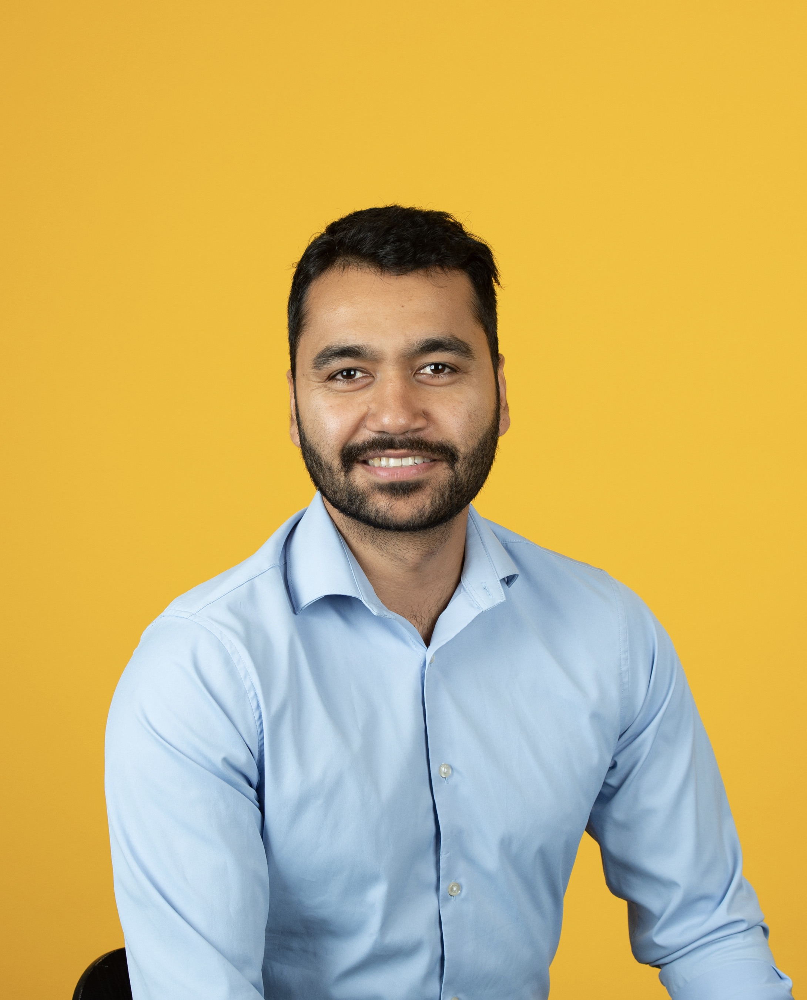
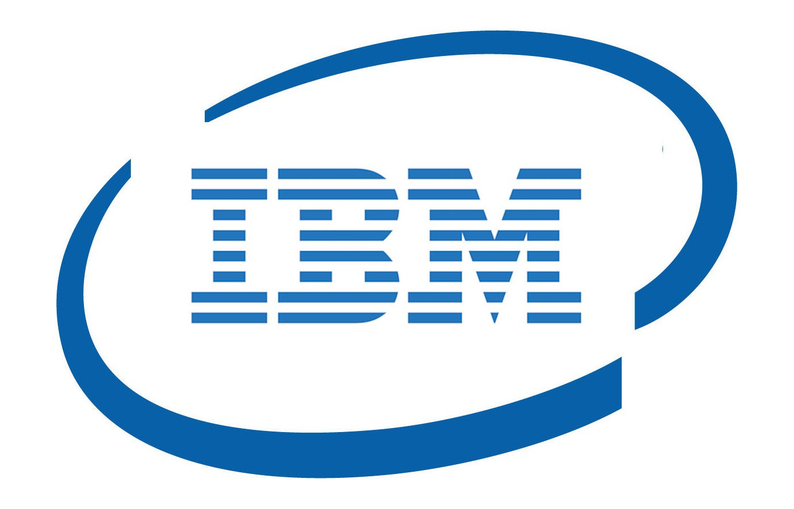

Hari Dahal
Postdoctoral Researcher
Internal Medicine – Biomedical Informatics
My research focuses on optimization algorithms, digital twins, optimal transport, distributed computation, machine learning, and causal inference. I am particularly interested in developing scalable computational methods with strong theoretical guarantees for complex scientific and biomedical applications.
Email
haridahal156@gmail.com
Academic Profile
Google Sites homepage
Office
University of Kentucky
Affiliation
Biomedical Informatics
Research Interests
Digital Twins
Constrained Optimization
First-Order Methods
Nonconvex Optimization
Optimal Transport
Distributed Optimization
Convergence Analysis
Machine Learning
Causal Inference
Research Support
Portions of my research have been supported through projects associated with the following organizations.
